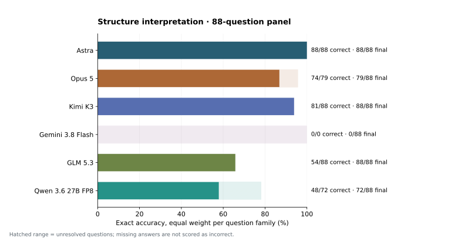
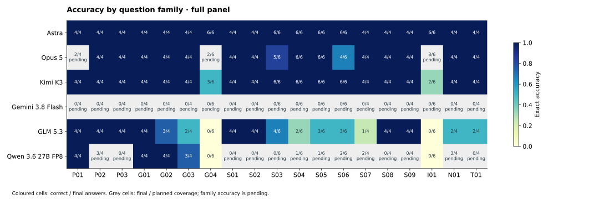
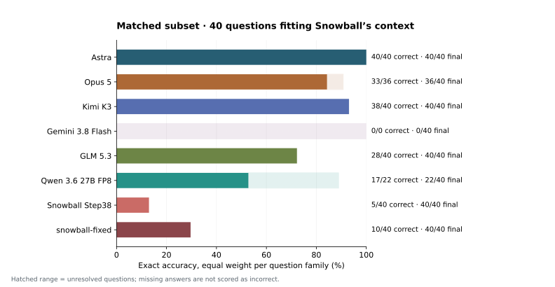

PDBThink · benchmark v4.0 · explicit no-tools requests
Reasoning from protein coordinates
88 structure-interpretation questions across 19 families. Every reported response comes from a request that explicitly disabled tool calls.
Full benchmark panel
Structure-interpretation results
Exact correctness requires the complete expected answer and the required format. The headline weights each of the 19 families equally. An incomplete panel has an accuracy range: its lower and upper bounds represent every unresolved question being incorrect or correct. These bounds describe missing evidence, not statistical confidence.
| Model | Correct / final answers | Coverage | Unresolved | Family-macro exact accuracy |
|---|---|---|---|---|
| Astra | 88 / 88 | 88 / 88 | 0 | 100.0% |
| Opus 5 | 74 / 79 | 79 / 88 | 9 | 86.8–95.6% · pending |
| Kimi K3 | 81 / 88 | 88 / 88 | 0 | 93.9% |
| Gemini 3.8 Flash | 0 / 0 | 0 / 88 | 88 | 0.0–100.0% · pending |
| GLM 5.3 | 54 / 88 | 88 / 88 | 0 | 65.8% |
| Qwen 3.6 27B FP8 | 48 / 72 | 72 / 88 | 16 | 57.9–78.1% · pending |


What each family asks
Reading, geometry, and structural interpretation
Each question supplies anonymised coordinates. The answer is checked against a versioned geometric or parsing definition. Four questions represent most families; G04, S03, S04, S05, S06 and I01 have six each.
P01 · Reading the structure
Chain inventory
List every chain identifier present.
Answer: Exact set of chain identifiers
View questions →P02 · Reading the structure
Residue count
Count the protein residues in a specified chain.
Answer: Integer
View questions →P03 · Reading the structure
Atom coordinates
Read a named atom’s displayed x, y and z coordinates.
Answer: Three numbers; tolerance 0.001 Å per coordinate
View questions →G01 · Geometry
Atom distance
Compute the Euclidean distance between two named atoms.
Answer: Distance in Å; tolerance 0.02 Å
View questions →G02 · Geometry
Nearest nonbonded atom
Find the nearest protein heavy atom, excluding the query atom and atoms one or two covalent bonds away.
Answer: Atom identifier
View questions →G03 · Geometry
Nearest residue
Choose the candidate residue with the smallest minimum heavy-atom distance to the target.
Answer: Residue identifier
View questions →G04 · Geometry
Worst steric clash
Identify the residue pair with the most severe overlap relative to atomic radii.
Answer: Residue pair
View questions →S01 · Structural interpretation
Salt-bridge partner
Find the unique partner under the specified Lys/Arg–Asp/Glu nitrogen–oxygen distance rule (4.0 Å).
Answer: Residue identifier
View questions →S02 · Structural interpretation
Phosphorylated residue
Identify the unique phosphoserine, phosphothreonine or phosphotyrosine in the displayed structure.
Answer: Residue identifier
View questions →S03 · Structural interpretation
Burial
Classify a residue as buried or solvent-exposed using relative solvent-accessible surface area (≤0.20 or ≥0.40).
Answer: Buried / solvent-exposed
View questions →S04 · Structural interpretation
Local secondary structure
Classify a specified residue’s secondary structure from the coordinates.
Answer: Helix / strand / coil
View questions →S05 · Structural interpretation
Fold class
Classify a chain by its overall secondary-structure composition.
Answer: Predominantly alpha helical / predominantly beta sheet / mixed alpha/beta
View questions →S06 · Structural interpretation
Ligand contacts
List every protein residue with a heavy atom within 4.0 Å of a heavy atom of the named ligand.
Answer: Exact residue set
View questions →S07 · Structural interpretation
Metal coordination
List direct protein N, O or S donors within the metal-specific distance cutoff. Exclude carbon donors and water-mediated contacts.
Answer: Exact residue set
View questions →S08 · Structural interpretation
Disulfide partner
Find the cysteine partner whose SG atom is within 2.3 Å of the named cysteine’s SG atom.
Answer: Residue identifier
View questions →S09 · Structural interpretation
Chi1 rotamer
Compute the N–CA–CB–fourth-atom dihedral and assign its stated angular bin.
Answer: g+ / t / g−
View questions →I01 · Interactions
Interface residues
List all residues in one chain with any heavy atom within 4.0 Å of a heavy atom in another chain.
Answer: Exact residue set
View questions →N01 · Interactions
Shared contact neighbour
Identify the unique residue contacting both named anchors under a 4.0 Å heavy-atom rule.
Answer: Residue identifier
View questions →T01 · Two-state comparison
Contacts gained / lost
Compare candidate residue-pair contacts across two displayed, superposed states using a 4.0 Å cutoff.
Answer: Two exact sets: gained and lost
View questions →Context-matched comparison
Snowball on 40 eligible questions
These are the unchanged full prompts that fit Snowball’s native 32,768-token context with positive output capacity. Each request receives all remaining context for its answer. Compare models on this same subset; Snowball is omitted from the full-panel plots above.
snowball-fixed is a separate formatting-only score for the same explicitly controlled outputs. It unwraps terminal LaTeX boxes before parsing; it does not change the generated answer.

Reproducible evaluation
One current answer per model and question
Tools. Every included OpenAI-compatible request specifies tools: [] or tools: null, plus tool_choice: "none". OpenRouter requests disable its web plugin. The runner executes no tools, supplies no tool results, and audits saved raw responses for tool events. These controls establish the API-visible protocol; the provider’s private serving implementation is not observable.
Budgets. New requests use the endpoint’s largest supported output budget that fits the full prompt. Previously completed controlled answers are retained; answers stopped at an avoidable imposed cap are retried with more capacity. Per-question cards show the actual requested budget and token usage. GLM uses its 262,144-token context; Qwen uses native 262,144-token context, followed by its supported extended context when needed; Snowball uses 32,768. Astra and Opus replacement/recovery requests allow 128,000 output tokens, Gemini 65,536, and Kimi 943,718. Historical lower-budget runs remain saved separately for reproducibility.
Delivery. Hosted replacement and recovery requests use batch priority where available. Kimi uses its standard endpoint because its selected provider rejects batch requests. GPU-hosted Qwen and Snowball run on CoreWeave. GLM uses batch inference.
Revised chain inventories. Two singleton-A cases have been replaced with complete two-chain and three-chain structures. All four P01 gold answers now contain more than A alone. Source selection used chain count and structure size, without model outcomes. Gold answers were recomputed from the displayed coordinates; the other 86 prompts and gold answers remain identical. This is dataset version 4.0.
Thinking text. Available provider-returned thinking and reasoning summaries are shown separately from the scored output. Encrypted blocks are labelled as unreadable. No missing thinking text is reconstructed. Each downloadable question record retains exact text and hashes.
Question validity audit
Astra’s currently incorrect or incomplete answers
This list follows the current explicitly controlled responses. It includes provisional cap-limited answers so they can be audited while the larger-budget rerun is pending. New errors will appear here as results arrive.
No incorrect Astra responses are present in this snapshot. Pending questions remain unresolved.
For the G04 clash question that stopped at the earlier cap, an independent coordinate audit reproduced the stored gold under the benchmark’s radius table and exclusions. The prompt does not spell out every radius, covalent exclusion and metal-contact rule; reproducing the gold does not establish that the wording uniquely specifies all those conventions.
Complete question atlas
All 88 prompts, answers, and thinking records
Open a question for the complete input and one current output per model. Long text can be expanded to full height or downloaded exactly. Separate question pages make it easier to capture screenshots.
q001 · P01 · Chain inventory
Open to load the complete record.
q002 · P01 · Chain inventory
Open to load the complete record.
q003 · P01 · Chain inventory
Open to load the complete record.
q004 · P01 · Chain inventory
Open to load the complete record.
q005 · P02 · Residue count
Open to load the complete record.
q006 · P02 · Residue count
Open to load the complete record.
q007 · P02 · Residue count
Open to load the complete record.
q008 · P02 · Residue count
Open to load the complete record.
q009 · P03 · Atom coordinates
Open to load the complete record.
q010 · P03 · Atom coordinates
Open to load the complete record.
q011 · P03 · Atom coordinates
Open to load the complete record.
q012 · P03 · Atom coordinates
Open to load the complete record.
q013 · G01 · Atom distance
Open to load the complete record.
q014 · G01 · Atom distance
Open to load the complete record.
q015 · G01 · Atom distance
Open to load the complete record.
q016 · G01 · Atom distance
Open to load the complete record.
q017 · G02 · Nearest nonbonded atom
Open to load the complete record.
q018 · G02 · Nearest nonbonded atom
Open to load the complete record.
q019 · G02 · Nearest nonbonded atom
Open to load the complete record.
q020 · G02 · Nearest nonbonded atom
Open to load the complete record.
q021 · G03 · Nearest residue
Open to load the complete record.
q022 · G03 · Nearest residue
Open to load the complete record.
q023 · G03 · Nearest residue
Open to load the complete record.
q024 · G03 · Nearest residue
Open to load the complete record.
q025 · G04 · Worst steric clash
Open to load the complete record.
q026 · G04 · Worst steric clash
Open to load the complete record.
q027 · G04 · Worst steric clash
Open to load the complete record.
q028 · G04 · Worst steric clash
Open to load the complete record.
q029 · G04 · Worst steric clash
Open to load the complete record.
q030 · G04 · Worst steric clash
Open to load the complete record.
q031 · S01 · Salt-bridge partner
Open to load the complete record.
q032 · S01 · Salt-bridge partner
Open to load the complete record.
q033 · S01 · Salt-bridge partner
Open to load the complete record.
q034 · S01 · Salt-bridge partner
Open to load the complete record.
q035 · S02 · Phosphorylated residue
Open to load the complete record.
q036 · S02 · Phosphorylated residue
Open to load the complete record.
q037 · S02 · Phosphorylated residue
Open to load the complete record.
q038 · S02 · Phosphorylated residue
Open to load the complete record.
q039 · S03 · Burial
Open to load the complete record.
q040 · S03 · Burial
Open to load the complete record.
q041 · S03 · Burial
Open to load the complete record.
q042 · S03 · Burial
Open to load the complete record.
q043 · S03 · Burial
Open to load the complete record.
q044 · S03 · Burial
Open to load the complete record.
q045 · S04 · Local secondary structure
Open to load the complete record.
q046 · S04 · Local secondary structure
Open to load the complete record.
q047 · S04 · Local secondary structure
Open to load the complete record.
q048 · S04 · Local secondary structure
Open to load the complete record.
q049 · S04 · Local secondary structure
Open to load the complete record.
q050 · S04 · Local secondary structure
Open to load the complete record.
q051 · S05 · Fold class
Open to load the complete record.
q052 · S05 · Fold class
Open to load the complete record.
q053 · S05 · Fold class
Open to load the complete record.
q054 · S05 · Fold class
Open to load the complete record.
q055 · S05 · Fold class
Open to load the complete record.
q056 · S05 · Fold class
Open to load the complete record.
q057 · S06 · Ligand contacts
Open to load the complete record.
q058 · S06 · Ligand contacts
Open to load the complete record.
q059 · S06 · Ligand contacts
Open to load the complete record.
q060 · S06 · Ligand contacts
Open to load the complete record.
q061 · S06 · Ligand contacts
Open to load the complete record.
q062 · S06 · Ligand contacts
Open to load the complete record.
q063 · S07 · Metal coordination
Open to load the complete record.
q064 · S07 · Metal coordination
Open to load the complete record.
q065 · S07 · Metal coordination
Open to load the complete record.
q066 · S07 · Metal coordination
Open to load the complete record.
q067 · S08 · Disulfide partner
Open to load the complete record.
q068 · S08 · Disulfide partner
Open to load the complete record.
q069 · S08 · Disulfide partner
Open to load the complete record.
q070 · S08 · Disulfide partner
Open to load the complete record.
q071 · S09 · Chi1 rotamer
Open to load the complete record.
q072 · S09 · Chi1 rotamer
Open to load the complete record.
q073 · S09 · Chi1 rotamer
Open to load the complete record.
q074 · S09 · Chi1 rotamer
Open to load the complete record.
q075 · I01 · Interface residues
Open to load the complete record.
q076 · I01 · Interface residues
Open to load the complete record.
q077 · I01 · Interface residues
Open to load the complete record.
q078 · I01 · Interface residues
Open to load the complete record.
q079 · I01 · Interface residues
Open to load the complete record.
q080 · I01 · Interface residues
Open to load the complete record.
q081 · N01 · Shared contact neighbour
Open to load the complete record.
q082 · N01 · Shared contact neighbour
Open to load the complete record.
q083 · N01 · Shared contact neighbour
Open to load the complete record.
q084 · N01 · Shared contact neighbour
Open to load the complete record.
q085 · T01 · Contacts gained / lost
Open to load the complete record.
q086 · T01 · Contacts gained / lost
Open to load the complete record.
q087 · T01 · Contacts gained / lost
Open to load the complete record.
q088 · T01 · Contacts gained / lost
Open to load the complete record.
Download and share
All exact prompts, outputs, thinking text, scores and checksums · Benchmark evidence JSON · Summary CSV
Share this report: openathena.ai/pdbthink/